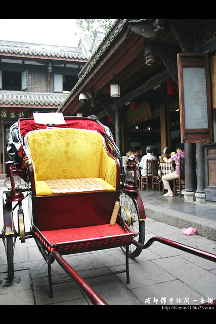
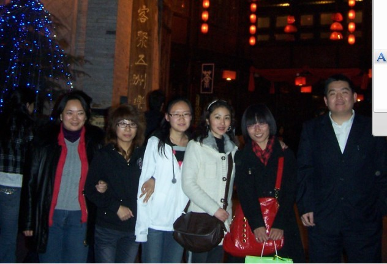

我眼中的北京队（二）
#1 我眼中的北京队（二） 作者：茗弈宽容 发表时间：2010-1-27 17:35:18
我想如果妈妈不在我会帮鲁剑大哥对付姚大哥的，虽我酒量不很好，但劝酒还是可以的。我可怜的鲁剑大哥性格比较含蓄，所以酒精都积压在体内；而姚大哥则不同，他喝了酒话匣子尤如滔滔江水绵绵不绝。。。酒精就发泄出来一大半了。我想姚大哥在酒桌中找到自信与感觉，毫无疑问在此时的酒桌上他是主角与主持人，上至天文，下至地理，远至无禁，近至立京,铁良老师他们推出的连换规则。大家都认真的听着，被他豪爽的人格魅力所吸引。
酒足饭饱后，天已暗下来，我打算带他们去逛逛锦里。走出饭馆，叫上还在密谈的土豆和我母亲，一大群人结伴前行。锦里不太远，是西蜀历史上最古老、最具有商业气息的街道之一，早在秦汉、三国时期便闻名全国。含有传统蜀文化元素，浓缩了成都生活的精华。有茶楼、客栈、酒楼、酒吧、戏台、风味小吃、工艺品、土特产，充分展现了四川民风民俗的独特魅力。

趁这机会我和传说中的殷立成老师拉开了话题：“殷老师算是我们的前辈了，想请教下您这么精湛的棋技是怎么练就的。”殷老师说话声音很温柔：“下棋需要坚持，自己喜欢了就要努力，我以前和另一个棋友封闭练棋，不出门，也不看谱，整整练了三年。呵呵！”“殷老师有几个徒弟？”“我有2个弟子，大弟子已经不下棋了，曹东还不错。”哇！曹东结果是殷老师的徒弟，难怪这么厉害。从殷老师的笑容中，能看出他对曹东这个徒弟很自豪。羡慕中。。。。。。殷老师收徒弟也很慎重，他说他现在也在教围棋。想起看过一篇文章说殷老师最早教五子棋要骑几个小时自行车，上2个小时课又骑几个小时车回家，我眼眶湿润了。老师这个词是伟大的！
锦里到了，我的肚子也咕咕开始叫了。大家都充满兴致的边遛达边观赏，而我想吃东西。但不好意思说，还好金蕊妹妹也喜欢吃，我就和她还有胡夕一起吃开了。金蕊和我一样吃了不长肉的，哈哈！她比我能吃，她们刚才吃了羊肉的呀，我的个乖乖这会什么伤心凉粉，三大炮，张飞牛肉一古脑的吃个没完。噶噶，可能下棋脑子用多了，这会补一下吧。她和胡夕是从小一块长大的，两个好姐妹是形影不离，哪怕下棋也如此。土豆一脸春风走来，怀中揣着一块刚买的丝巾。在我等“严刑”逼问下才知是给心爱的女友买的，价钱倒是不贵，不过这小子很有心。哎，可能人帅没办法吧。红梅姐姐，她似乎不太开心，原来他们还有个队员王晓在宾馆，她生病了不吃东西，红梅姐姐在着急给她带什么回去吃呢。感动，暗自想我如果是北京队友我一定会装病让她来关心我的，嘻嘻。牛牛，用一双大眼睛忽闪忽闪一直偷偷看我，估计心里在把眼前的我和网络的小刀作比较。弟弟穿得挺洋气，黑色皮衣，带一顶很酷的帽子。他们都说：“牛牛，把你的墨镜戴着给小刀看看吧."乖弟弟也不羞涩，很大方的戴上给我看。大家都很喜欢他，我也是，真想掐掐他的脸蛋。在姚大哥的安排下我们集体合影留恋。
时间过得很快，逛累了也吃完了。我们陪同他们回到宾馆，再回家。
我从此多了桩心事，我想去北京，想和他们谈论交流对五子的思考及规则，推广等，我想与北京队下次见面（妈妈不在的情况下）放开喝几杯！

［ 五子痴 于 2010-1-28 11:40:59 时奖励此帖[金币加 20 威望加1］
［ 飞哥 于 2010-1-28 11:43:26 时花20金币送鲜花一朵］
［ 岳麓小棋后 于 2010-2-12 0:03:30 时花20金币送鲜花一朵］
#2 Re:我眼中的北京队（二） 作者：木木夕 发表时间：2010-1-28 11:42:06
有意思，写得好。#3 Re:我眼中的北京队（二） 作者：飞哥 发表时间：2010-1-28 11:43:58
 刀刀下次我来成都找你喝酒
刀刀下次我来成都找你喝酒
#4 Re:我眼中的北京队（二） 作者：wsmwy 发表时间：2010-1-28 11:48:08
 支持楼上，记得算我一份！一个穷色狼。
支持楼上，记得算我一份！一个穷色狼。
#5 Re:我眼中的北京队（二） 作者：岳麓小棋后 发表时间：2010-2-12 0:02:56
娓娓动听,感人肺腑
#6 Re:我眼中的北京队（二） 作者：我的背包装棋子 发表时间：2010-3-9 16:45:17
吼吼 ！